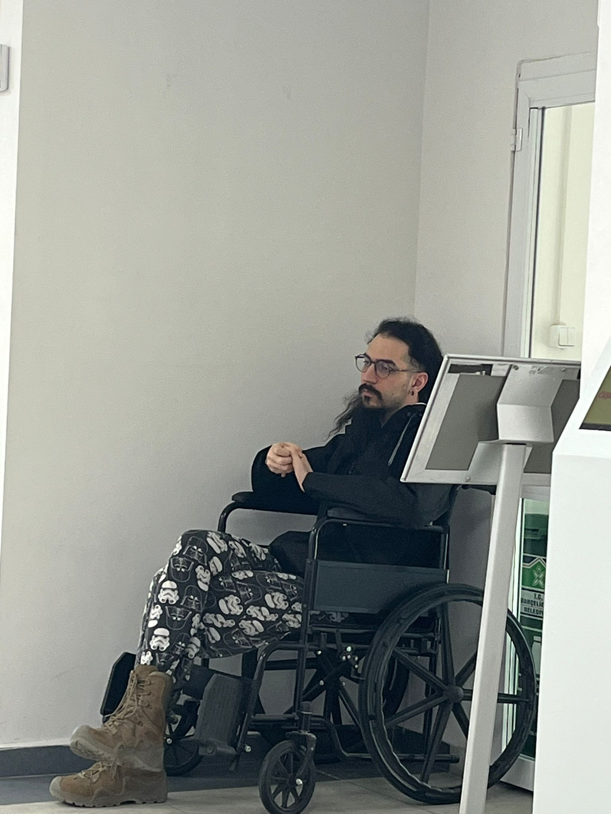
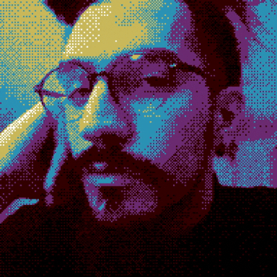

Hi! I'm
_ _ _ _ __ _
| | | | | | |/ / | |
| | | | |_ _ ___ | ' / __ _ _ _ _ __ ___ __ _| | __
| | | | | | | |/ __| | < / _` | | | | '_ ` _ \ / _` | |/ /
| |__| | | |_| | (__ | . \ (_| | |_| | | | | | | (_| | <
\____/|_|\__,_|\___| |_|\_\__,_|\__, |_| |_| |_|\__,_|_|\_\
)_) __/ |
A person who loves and creating |___/ new things.
A person who loves and creating new things.
I am a multidisciplinary artist who combines conceptual art with the figurative aspects of the culture I was born and raised, in auditory and/or visual, interactive, and algorithmic forms. My projects often revolve around themes such as human perception, experience, and psychology.
On my personal projects, I work on fractured emotions and thoughts through various forms of digital projection, focusing on interactive audio-visual experience.
Hi! I'm Uluç Kaymak.
This is my alternative porfolio, but it has some bugs right now. You should try to enjoy these bugs if you can.
Don't forget to pet my virtual cat, Sonic
She loves to be petted.



